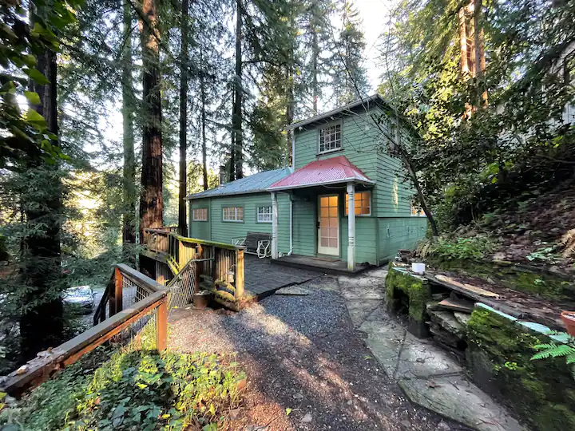
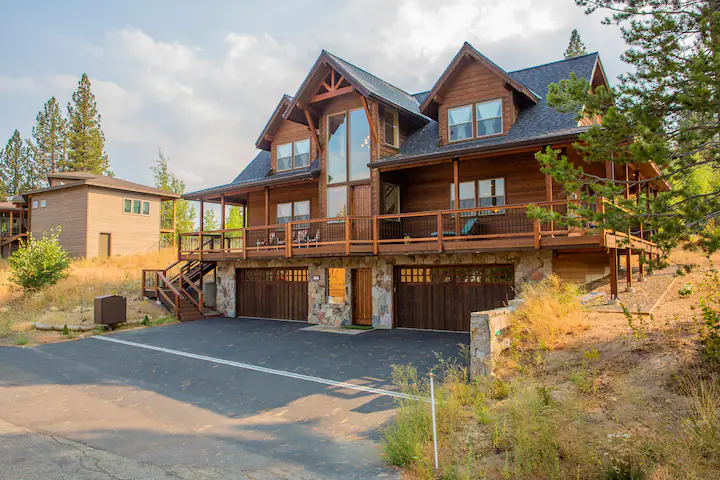
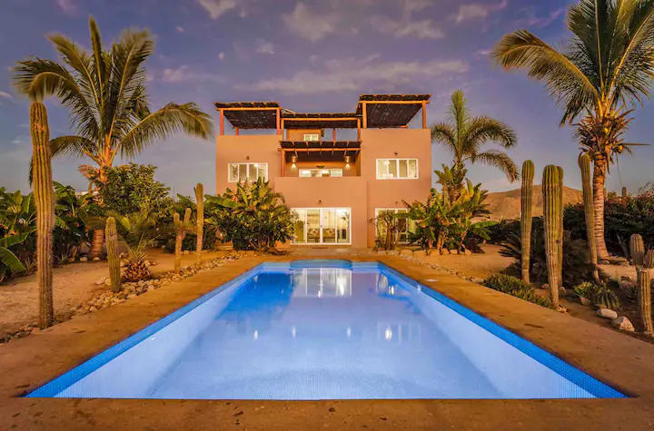

Available Vacation Homes!
-
Camp Meeker, California
Looking for a solid vacation home on a budget? Then look no further than Camp Meeker, California! This home has a very natural feel to it, and it makes you feel like you are one with nature! At $6,095 per month, this is among our more affordable options.

- South Lake Tahoe, California
-
$8,802 monthly before taxes
Do you like spacious places? Do you want to be near pretty scenery? Then come on down to Lake Tahoe, and immerse yourself in breathtaking surroundings! Whether you like exploring state parks, walking along beautiful trails, skiing and snowboarding activities, along with an endless amount of other things to

- Cerritos Beach
-
$9,497 monthly before taxes
Do you perhaps want to travel outside of the United States? Do you want to have a different style of experience from the typical Skycnc experience? Then head on over to Mexico, and embrace the culture here at Cerritos Beach! With

Our Used Stock!
-
Steam Deck (Starting at $280)
Do you want a console? Do you want a PC? Do you want a portable gaming beast? Do you want to be able to hook a system up to a TV or monitor for big screen gaming? The Steam Deck covers all of that! Powered by SteamOS, a Linux-based computer operating system designed around ease of use and a console-like interface, the Steam Deck can fit both casual users and power users alike! With both access to a gaming mode and desktop mode, you can use it like both a console and a computer at the same time, with docking and keyboard and mouse support just like a regular computer! This portable console / PC hybrid is quite a powerhouse for its size, and can even play high quality AAA games without the use of a graphics card! This system is perfect for both the pick up and play kind of gamer or a power user looking for a highly configurable experience through the power of Linux and SteamOS!

-
Nvidia GeForce GTX 750 Ti ($40)
Do you need a quick graphics upgrade without spending a ton of pretty pennies? Then the GTX 750 Ti is for you! It is quite cheap, and is a great upgrade from most integrated graphics solutions! It is also a very solid graphics card for retro PC enthusiasts, too, as it consumes little power, yet is very powerful for retro gaming. This card supports as far back as Windows XP, or as new as Windows 11, along with having Linux support if that's your thing, and is a great way to improve a wide variety of systems on a tight budget!